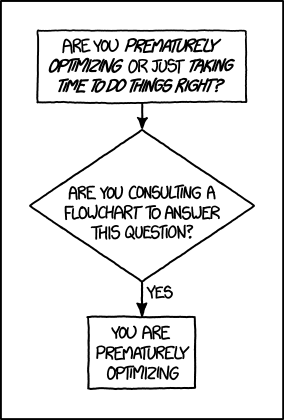
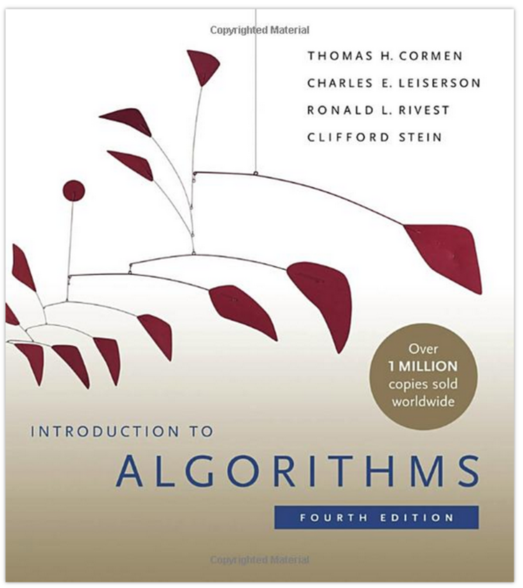
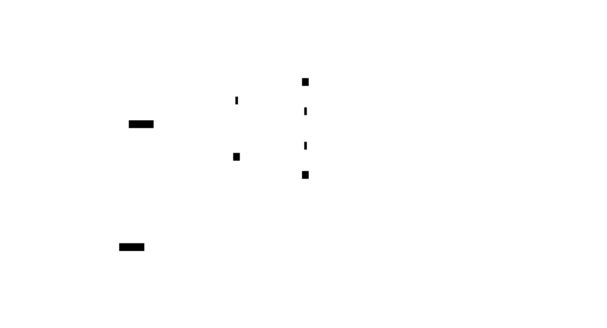

What's that?

Who's that?

General idea:
- Maybe you heard of Moore's law? Computing power doubles every two years
- Andy and Bill's law: What Andy Grove (Intel ex-CEO) produces in Hardware speed, Bill Gates takes away.
- Lemur's law: Software engineers get twice as incompentent every decade (only half ironic) - seriously, as an engineering discipline we should be ashamed of how bad we performed over the last decades. We introduced so many layers of bad software and hacks that we depend on that we can't change anymore. It's like building a complete city on sand. Part of this because we don't really do engineerings and focus so much on providing company value that many of us did not even learn how good, performance optimized is supposed to look like. The costs of software engineers is more expensive than hardware these days, but this is short sighted. Investing in quality long term benefits us all. I hope to change your perspective a bit in this talk. We all lost the connection to the machine our programs run on and while the things in this talk were somewhat common knowledge 20 years ago (at least parts of it) it became somehow obscure knowledge over time and universities just focused on disciplines like web development and data science where you're not supposed to have this knowledge. Because you know, numpy and pandas does it for you. Or the browser will just do the right thing.
- In the 90s we still squeezed every byte of memory out of game consoles and did both amazing and scary optimizations to get basic functionality.
- And last decade we invented things like Electron, a lazy-ass way to make applications "portable" by just starting a browser for every application - I don't want you guys to invent something like Electron
- If you think Electron is a good idea, then please stop doing anything related to software engineering.
- Maybe try gardening, or do waterboarding in Guantanamo. Just do something less hurtful to mankind than Electron
- Seriously take some pride as software engineerings and try to leave a solid legacy to the next generation of engineers.
- Teaching you about the internals of program execution.
- Very neglected field - not much teached in studies, during day-to-day work "it worked (once)" is more important.
Disclaimer:
- We're working from low level to slightly higher level here. Don't expect tips like "use this data structure to make stuff incredibly fast". I'll won't go over all possible performance tips for your language (there are better lists on the internet). I also won't go over a lot of data structures - what I do show is to show you how to choose a data structure.
- The talk is loosely tied to the hardware: General intro, cpu, mem, io, parallel programming
- Most code examples will be in Go and C, as most ideads require a compiled language.
- Interpreted languages like Python/Typescript might take away a few concepts, but to be honest, your language is fucked up and will never achieve solid performance.
- For Python you can at least put performance criticals into C libraries, for the blistering cestpool that web technology is... well, I guess your only hope is Webassembly.
- If you are unsure how a specific concept translates to your language: just ask. I might have no idea, but often there is only a limited choice of design decisions language designers can make.
- In this talk you will learn why people invent things Webassembly - even though it's kinda sad.
Simple can be complex
import sys print(sys.stdin.readline().strip())
The prior rules assume that we're able to understand what's going on in our program. After all we have to judge what gets executed ultimately. Turns out, in interpreted language this is very hard.
Interpreted -> compiled to byte code. sys.stdin.readline are two dict lookups. memory allocations file I/O from stdin to stdout calling a c function (strip) unicode conversion!
Inside Python 🐍
static PyObject * strip(PyObject *self, PyObject *args) { char *s = NULL; if (!PyArg_ParseTuple(args, "s", &s)) { return NULL; } /* ... actual "strip" logic here ... */ return PyUnicode_FromString(s); }
All functions eventuall call functions implemented in C:
And that happens for every function call in Python. Very often. All those objects are allocated on the heap. Python is easy, but the price you pay for it is high. This might give you a first feeling on how much stuff happens in a simple program.
Printing to stdout and drawing something on the screen is insanely complex too and beyond this workshop.
This slides could be also a talk about "Why interpreted languages suck"
Most optimizations will not work with python. As a language it's really disconnected from the HW - every single statement will cause 100s or 1000s of assembly instructions. Also there are no almost no guarantees how big e.g. arrays or other data structures will be and how they are layout in memory. You have to rely on your interpreter (and I count Java's JIT as one!) to be fast on modern hardware - most are not and that's why there's so much C libraries in python, making the whole packaging system a bloody mess.
Workshop contents
- Why is performance important?
- How does the machine we program on work?
- Are there ways to exploit this machine?
Remember: Work shop.
If you can answer these questions to your own liking, then you succeeded. I can't yet.
What's missing?
- An exhausting list of tips. You'd forget them.
- A full lecture on algorithm and data structures.
- A lecture you just have to listen to make it click.
- Language specific optimization techniques.
- Performance in distributed systems.
- Application specific performance tips (Networking, SQL, Data ...)
Google: I mean that. After the workshop you know what to google for. Hopefully.
There are plenty free online courses and many books. I can't really recommend one, as my lecture in university is also already 10 years ago now.
Languages: includes C, Go, Python and a bit of Bash though. Most code examples are written with compiled languages in mind. Users of interpreted languages may find some things unintuitive.
Check that "interpreted" and "compiled" is a known distinction.
Experiments mandatory 🥼
You'll write your own cute database:
- You can group up or do it on our own.
- You can use your favourite language.
- You can always ask me outside or in the workshop about your progress and problems.
But do the database for yourself, not for me.
What is optimization?
Please define it in your words.
In computer science, optimization is the process of modifying a software system to make some aspect of it work more efficiently or use fewer resources. -- Wikipedia
The "fewer resources" is the more important bit. See yourself as tenant of resources like CPU, Mem, disk, network, dbs, ... that you share with other tenants of the same system. Be nice to other tenants, don't just make your own life pleasant.
When to optimize?
If performance requirements are not met and when doing so does not hurt other requirements.
Wait, there are such requirements?
Most of us do implicit requirements: Does it feel fast enough? So probably more often than you do now.
Other requirements: Maintenability and readability e.g. or correctness.
Questions to ask:
- On what kind of system the software will run on?
- How many requests will there be in parallel?
- What kind of latency is the user willing to accept? (Games, Websites, ATMs, ...)
- How much scaling is expected in the next time?
- How long can we do without? Do we need it now?
- Will my technology choice be a bottleneck? (Python, React, Electron, ...)
- Does EdgeCaseX need to perform well?
- Are the optimizations worth the risk/effort?
- ...
It's your job to figure out the performance requirements. Your PM will likely not be technical enough to set realisitc goals, so you need to discuss with him what kind of use cases you have and what kind of performance is acceptable for them (the latter is your part) Figure out possible edge cases together (i.e. pathological use cases bringing down your requirement) The engineer is the driver of the conversation, as he know's where the problems are.
Do some basic calculations based on these questions and add X to your goals. Those are your requirements.
When not to optimize?
- Donald Knuth
I used the full quote here, since it's often abbreviated as "premature optimization is the root of all evil" which has a totally different meaning.
Many programmers just asked "how fast can it be?" and not "how fast should it be?" That's a fine question for personal learning but not for an actual product where time is a resource.
If you don't have a problem you really should not do anything. It is difficult to define what a "problem" is.
Electron apparently defined that it's not a problem if low-memory devices can't use their framework.
Huh, premature?
Reminder: It does not matter how fast you compute a wrong result.
Proof: There's a xkcd for everything.
The main point is: Take your time to do things the right away. Don't drop the pen when it worked for the first time and didn't feel slow, really take some to measure.
However, don't just blindly optimize things before you measured or optimize the small things after measuring.
Optimizations come at a price. It's usually more and harder code to maintain (and if not, why didn't you do it in the first place?) or they have some other disadavntages (an index in a database for example slows drown writes and needs space!). Is it worth the risk?
How do I measure?
In a reproducible environment.
Only ever compare apples with apples. Don't compare numbers between:
- Different machines.
- Different runs with different load on the same machine.
- Different inputs.
- Different implementations if they do not produce the same results.
Use benchmarks primarily to compare numbers of older benchmarks. And if you have to compare different implementations: Stay fair.
How to optimize?
Requires a strong understanding of your program and experience.
- No way around measurements.
- A certain level of experience helps.
- The model of your program in your head is different to what gets actually executed.
No short answer and no shortcuts to this. It will be a long journey and this is workshop will be only a step on the journey. Very many different languages, OS (Python, Go) and many different applications (SQL - 90%: just add an index) that cannot all be covered.
A rule of thumb
Go from big to small:
- Do the obvious things right away.
- Check if your requirements are met.
- Find the biggest bottleneck.
- Optimize it and repeat from step 1.
- "obvious" depends a lot on experience. Example: Open a CSV file 10k times to extract a single row because you have a convenience function. Do not use this as excuse for bad software.
- If you don't have concrete performance requirements, make some.
- We are incredible bad at guessing! Never ever skip this step!
- Never mix up this order.
Theory: Complexity
- Algorithms/Structures can be divided in classes.
- General types are time and space complexity.
- Each divided in worst, best & average case.
- For datastructures specific operations are scored.
- Complexity classes are given in Big-O notation.
It's a bit like Pokemon for algorithms. "Merge sort, use worst case on quick sort!" "It's very effective!"
Good example (thanks Alex): https://sortvisualizer.com (compare quick sort and merge sort)
Theory: Big-O Notation

https://www.bigocheatsheet.com
O(1) -> constant O(n) -> linear O(log n) -> logarithmic O(n * log n) -> sorting O(n ** x) -> polynomial O(x ** n) -> exponential O(n!) -> fucktorial (oops, typo)
Data structures and algorithms:
-> Some have better space / time complexity. -> Most have tradeoffs, only few are universally useful like arrays / hash tables -> Some are probalibisitic: i.e. they save you work or space at the expense of accuracy (bloom filters) -> Difference between O(log n) and O(1) is not important most of the time. (database developers might disagree here though)
Complexity exercises:
- Time complexity of Bubble Sort?
- Time complexity of Binary Search (worst & best)?
- Space complexity of Merge Sort versus Quick Sort?
- Removing an element from an Array vs from a Linked List?
- Best/Worst case time complexity of Get/Set of a Hash Map?
- Space complexity of a Hash Map?
- O(n**2)
- O(log2 n) (both)
- O(n) vs O(1)
- O(n) vs O(1)
- O(1) and O(n) (but much more expensive than an array index)
- O(n)
Makes you wonder why you don't use hash maps all the time? Indeed they are a wonderful invention, but:
- get is still much more expensive than an array index.
- collisions can happen, making things inefficient.
- range queries and sorting are impossible.
- self balancing trees have O(log n) for get/set but are stable.
</Data structures lecture>
That's all. Go and remember a list of:
- Sorting algorithms (+ external sorting)
- Common & some specialized data structures.
- Typical algorithms like binary search.
- Levenshtein, Graphs, Backtracking, ...
- ...whatever is of interest to you.
Data structures and algorithms is something you gonna have to learn yourself. Would totally go over the scope of this workshop and does not work as frontal lecture.
Do not ignore primitive algorithms like bubble sort. Remember: Fancy algorithms are slow when n is small, and n is usually small.
Performance metrics
Automated tests that assert the performance requirements of a piece of code by computing performance metrics and...
- ...either plot them for human consumption.
- ...compare against old versions.
- ...compare against constant thresholds.
Collect possible performance metrics (unit in parans):
- Execution time (time, cpu cycles)
- Latency (time)
- Throughput (IO, bytes/sec)
- Memory (allocations, peak, total bytes)
NOTE: Execution is heavily tied to hardware.
For CI/CD tools you can use something like this:
https://github.com/dandavison/chronologer
In an ideal world, performance requirements are tested just like normal functional requirements.
Challenges:
- Different machines that benchmarks run on.
- Only comparison between releases makes sense.
Makes sense only for big projects. Many projects have their own set of scripts to do this. I'm not aware of a standard solution.
Humans vs Magnitudes
Interactive Latency Visualization
Optimize in this order:
Profiling
# Profiling is throwaway-benchmarking: $ hyperfine <some-command>
Profiling is usually used for finding a bottleneck. Basically a throw away benchmark, like a non-automated, manual test.
So most of the time the terms can be used interchangeably.
- Run several times.
- If the variance is not big, take the maximum.
- If the variance is rather large, use min...max.
Workshop Project
- Richard Feynman
Words don't cut it. To understand something you have to lay your hands on something and start exploring. Workshop is about tacit knowledge, you have to connect the little dots on my slides by working on this small slide project. I can only show you things, not understand and learn it for you.
tacit = unausgeprochen
TheStore: Memory only
type KV map[string][]byte func (kv *KV) sync() { var b bytes.Buffer for k, v := range kv { b.WriteString(fmt.Sprintf("%s=%s\n", k, v)) } ioutil.WriteFile("/blah", b.Bytes(), 0644) }
You could use a bigh in-memory hash table and sync that to disk sometimes.
When do you call sync()? After every write? Inefficient. Less often? Then you will suffer data loss on power loss or crash.
Sounds impractical, but surprise: Redis actually works this way. They do not use a hash map internally though, but a tree structure as index. Oh, and they perform most work in a single thread. Still fast.
TheStore: Append only
set() { printf "%s=%s\n" "$1" "$2" >> ./db } get() { grep "^$1=" ./db | tail -1 | cut -d= -f2- }
Simple append only write, get reads only the last value. Every update of an existing key writes it again.
Terribly slow because get needs to scan the whole db, but very easy to implement and set is pretty fast. If you hardly ever call get then this might be a viable solution.
TheStore: Indexed
type KV map[string]int64 func (kv *KV) Set(key string, val []byte) { // 1. Build entry with key and value // 2. Append entry to end of db file // 3. Update kv index with new offset. } func (kv *KV) Get(key string) []byte { // 1. Get offset & seek to it. // 2. Read value from db file at offset. }
This is actually already quite nice!
This approach is called "log structured", because values are handled like a stream of logs, just timestamped (or offset stamped) data.
We can handle any number of values as long as we do not run out of memory. If we throw in a little caching, we could probably get decent performance. This would also be a decent usage for something called mmap which we will look into later in this series.
When loading the db file, we can reconstruct the index map easily.
Problems:
- There will be many duplicates if we update the same keys over and over.
- The database file will grow without bound. Might turn out problematic.
- There may only be one writer at a point (race condition between size of db and actual write).
TheStore: Segments
Solution:
- If the db file gets too big (> 32M), start a new one.
- Old one gets compacted in background (i.e. duplicates get removed)
- Index structure remembers what file we need to read.
The compaction step can be easily done in the background.
Open issues:
- We still need to have all keys in memory.
- Range queries are kinda impossible.
- We can't delete stuff.
TheStore: Deletion
When we want to delete something, we just write a special value that denotes that this key was deleted. If a tombstone is the last value then the key is gone. Compaction can use it to clean up old traces of that value.
At this point we already build a key value store that is used out there: Bitcask.
TheStore: Range queries

Change approach quite a bit:
- Keep a batch of key-value pairs in memory, but sorted by key.
- If batch gets too big, then swap to disk.
- Keep every 100th key in the offset index.
- If key not in index, go to file and scan the range.
This technique is called a Log-Structured-Merge tree (LSM).
"tree" because usually a tree is used instead of a hash table for easy handling, but this is not strictly necessary and the main point of the concept.
Since the index can be "sparse" (not all keys need to be stored), we have very fine grained control over memory usage. Worst thing is a bit of extra scanning in the file.
Open problems:
- Get on non-existing keys.
- Crash safety
TheStore: WAL 🐋
What if a crash occurs before things get written to disk?
We have to use a WAL like above! On a crash we can reconstruct the memory index from it. Postgres and many other databases make use of this technique too.
Fynn!
I left quite some details out, but that's something you should be able to figure out.